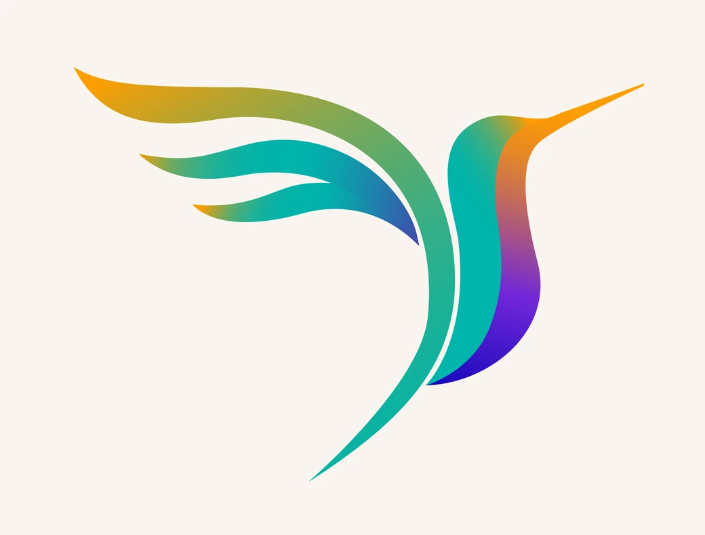
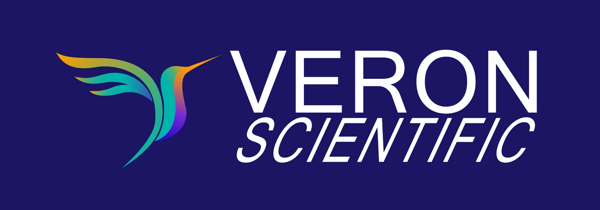

Visual identity · Website · UX prototype
A clinical research consultancy working with biotech, pharma and MedTech companies.
Create a visual identity and website that feels credible in a pharmaceutical context without becoming cold. The harder part was turning complex clinical services into a structure a visitor can move through without getting lost.
The client wanted a hummingbird, and more colour than the sector usually uses.


Twelve services in one list, each opening in place. A visitor finds the stage of the trial they are at without leaving the page.